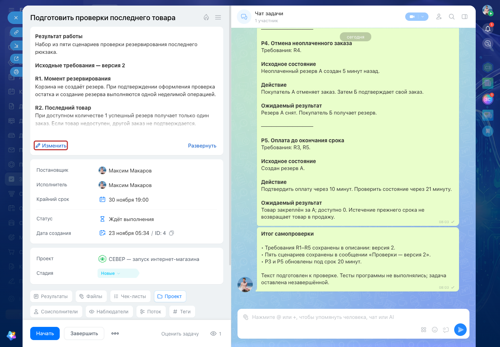
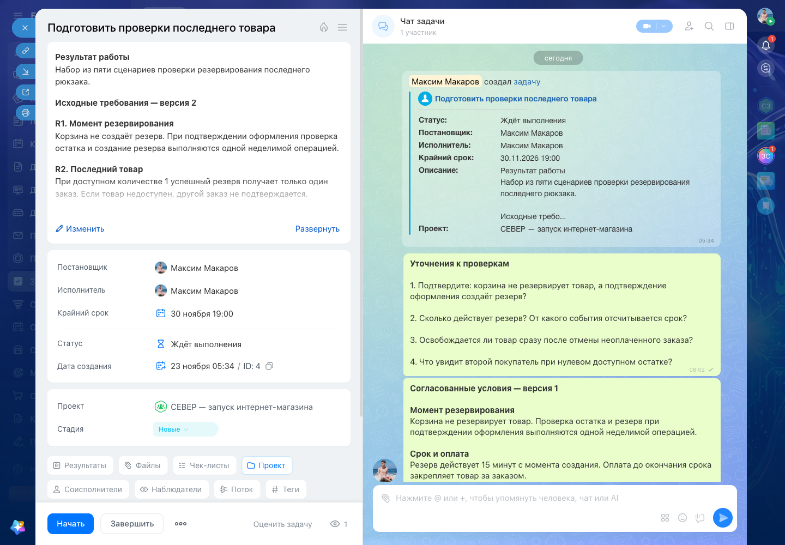
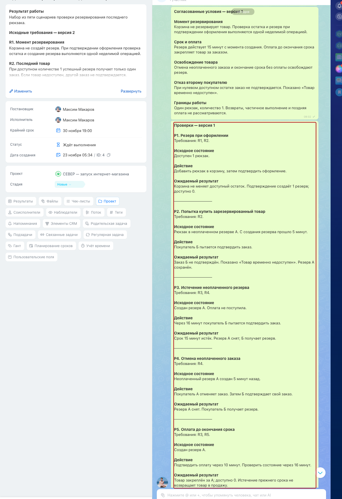
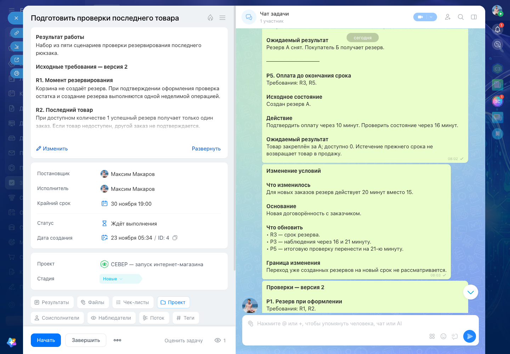
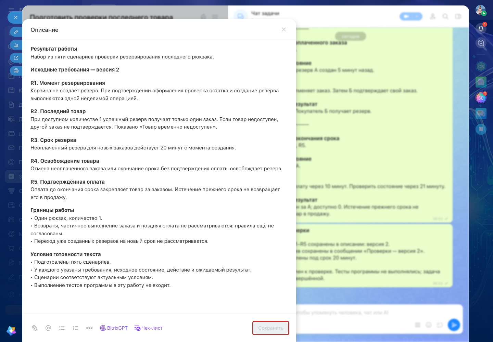
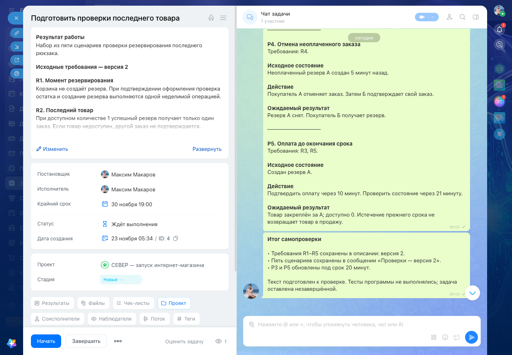

Уточняем требования
в Битрикс24
Превратим общую постановку в задачу, которую можно выполнить и проверить. Вопросы, договорённости и проверки сохраним в проекте с прошлой пары.
- Где работаем
- Проект «СЕВЕР»
- Что нужно
- Результаты практики 2
- Что получим
- Уточнённую задачу и проверки
Задать вопросы, от ответов на которые зависит поведение магазина.
Отделить согласованные условия от предположений.
Описать конкретные случаи и учесть изменение заказчика.
01Продолжаем существующую задачу
На прошлой паре мы сохранили правила резервирования последнего рюкзака. Резерв — временное закрепление товара за заказом: другим покупателям он пока недоступен. Теперь нужно подготовить проверки этих правил. Для этого в проекте уже есть задача «Подготовить проверки последнего товара».
Правила опубликованы в чате завершённой задачи «Описать правила резервирования последнего товара». Используем этот текст как исходные данные. Продолжим незавершённую задачу о проверках.
Откройте результат предыдущей практики и найдите в чате задачи о правилах срок 15 минут. Пока это исходное условие; позже мы изменим его по новой договорённости.
«Покупатель должен оформить заказ, если рюкзак доступен. Двум покупателям нельзя продать последний рюкзак. Если заказ не оплачен, товар должен вернуться в продажу».
Такое пожелание объясняет цель, но оставляет неопределённости. Нужно уточнить момент резервирования, срок ожидания оплаты и результат отказа второму покупателю. Без этих условий разработчик и проверяющий могут принять разные решения.
Делаем
- Откройте проект с прошлой пары
Найдите «СЕВЕР — запуск интернет-магазина» и его задачи. Используйте своё рабочее пространство: новый портал и новый проект для этой пары не нужны.
- Найдите задачу о проверках
Откройте «Подготовить проверки последнего товара». Прочитайте исходное описание. Если задача не была создана, сначала выполните соответствующее задание предыдущей практики.
- Сверьте исходные правила
В соседней вкладке браузера откройте результат задачи о резервировании. Выпишите согласованные условия: резерв при оформлении, 15 минут на оплату, снятие при отмене или истечении срока.
На следующих кадрах показана карточка после выполнения примера. Слева уже находится описание версии 2, а справа — сообщения разных этапов. При выполнении идите по шагам текста: сначала согласуйте 15 минут, затем внесите изменение до 20 минут. Имена, даты и номер задачи в вашем портале будут другими.

Разбираемся
На этой паре мы готовим текст требований и проверок. Работающий магазин ещё не создан. Успешно написанный сценарий проверки не доказывает, что программа выполняет его правильно. Сначала выясним, какое поведение должен описывать этот сценарий.
Все сообщения отправляем в чат задачи «Подготовить проверки последнего товара». Описание меняем в этой же карточке. Готовые тексты ниже можно выделить и скопировать целиком. Перед отправкой прочитайте текст и сопоставьте его с объяснением шага.
02Вопросы заказчику
Вопрос полезен, если ответ меняет правило магазина или ожидаемый результат проверки. «Всё ли должно работать правильно?» не помогает выбрать поведение. «Снимается ли резерв сразу после отмены?» помогает.
| Неясность | Точный вопрос | На что влияет ответ |
|---|---|---|
| Товар лежит в корзине | Добавление в корзину уже резервирует рюкзак или резерв возникает при подтверждении оформления? | Может ли другой покупатель заказать этот товар. |
| Оплата ещё не пришла | Сколько действует резерв и от какого события отсчитывается время? | Когда товар снова доступен. |
| Последний рюкзак занят | Что увидит второй покупатель и будет ли его заказ подтверждён? | Сообщение и состояние второго заказа. |
Запись в чате сохраняет ход обсуждения. Другой участник увидит, что уточняли и на какой ответ опирались. Итоговые правила позже перенесём в описание, чтобы их не пришлось собирать из переписки.
Делаем
- Запишите вопросы в чат задачи
В исходном пожелании не указан момент создания резерва. Без ответа нельзя выбрать ожидаемый результат после добавления в корзину. Остальные вопросы уточняют срок, отмену, оплату и отказ второму покупателю. Скопируйте сообщение ниже в поле ввода чата и отправьте.
В чат задачи · вопросыУточнения к проверкам 1. В какой момент создаётся резерв: при добавлении в корзину или при подтверждении оформления? 2. Подтвердите срок: резерв действует 15 минут с момента создания? Что происходит, если оплата за это время не подтверждена? 3. Освобождается ли резерв сразу после отмены неоплаченного заказа? Что происходит с товаром, если оплата подтверждена до окончания срока? 4. Что увидит второй покупатель, если последний рюкзак уже зарезервирован? Будет ли подтверждён его заказ?Найдите отправленное сообщение. В нём должны быть четыре пронумерованных вопроса без обрезанного текста.
- Прочитайте ответы для этого примера
Ответы заказчика заданы в условии практики под кадром. Раскройте блок «Ответы заказчика для продолжения работы». Битрикс24 сам ответы не формирует. Сопоставьте каждый вопрос с соответствующим условием.

Ответы заказчика для продолжения работы
Для дальнейшей работы используем следующие условия примера. Они подтверждают правила прошлой пары и уточняют момент начала отсчёта.
В ответе используется выражение «одной неделимой операцией». Проверка остатка и создание резерва выполняются вместе. Два одновременных оформления не должны оба получить подтверждение на единственный рюкзак.
- Корзина не резервирует товар. При подтверждении оформления система проверяет доступное количество и создаёт резерв одной неделимой операцией.
- Резерв действует 15 минут с момента его создания. Подтверждение оплаты до окончания этого срока закрепляет товар за заказом.
- Отмена неоплаченного заказа освобождает резерв. Если срок закончился без подтверждения оплаты, резерв также снимается.
- Если доступный остаток равен нулю, заказ на этот рюкзак не подтверждается. Покупатель видит «Товар временно недоступен».
- В этой задаче проверяем количество 1. Возврат оплаченной покупки, частичный заказ и оплата после окончания резерва требуют отдельных правил и сюда не входят.
Число 15 минут согласовано для этого примера. В другом магазине срок может отличаться. Если ваш прошлый текст отличается от этих условий, отметьте расхождение и приведите постановку к единому варианту.
Теперь у нас есть ответы. Следующий шаг — сделать их доступными в описании задачи, сохранив вопросы и ответы в переписке.
03Требования в описании
Требование — условие, которому должен соответствовать продукт. Оно описывает поведение или свойство магазина. Задача описывает работу человека: например, подготовить проверки этого поведения.
«Не продавайте один рюкзак дважды».
При остатке 1 успешный резерв получает только один заказ.
Подготовить проверки резервирования последнего рюкзака.
В задаче о проверках требования нужны как основание: по ним исполнитель определяет ожидаемые результаты. Сохраним две записи. Сообщение в чате покажет, какие ответы приняты. Описание соберёт действующие правила и результат работы исполнителя в одном месте.
Номера R1–R5 нужны для связи требований с проверками. Буква R здесь обозначает требование. Метки вводятся вручную в тексте. Битрикс24 не связывает их автоматически. При изменении R3 исполнитель найдёт проверки с этой меткой и перечитает их.
Делаем
- Сохраните ответы в чате
Вопросы уже отправлены, а ответы пока находятся только в тексте практики. Сохраним их в задаче, чтобы другой участник смог восстановить договорённость. Отправьте отдельным сообщением следующие условия примера.
В чат задачи · согласованные условияСогласованные условия — версия 1 1. Добавление в корзину не создаёт резерв. При подтверждении оформления проверка остатка и создание резерва выполняются одной неделимой операцией. 2. Резерв действует 15 минут с момента создания. 3. Отмена неоплаченного заказа или окончание срока без подтверждения оплаты освобождает резерв. 4. Если доступный остаток равен нулю, заказ не подтверждается. Покупатель видит «Товар временно недоступен». 5. Подтверждение оплаты до окончания резерва закрепляет товар за заказом. Истечение прежнего срока не возвращает его в продажу. Границы: один рюкзак, количество 1. Возврат оплаченного товара, частичный заказ и позднюю оплату здесь не рассматриваем.Проверьте: после вопросов появилось сообщение «Согласованные условия — версия 1». В нём остался срок 15 минут.
- Перенесите правила в описание
Название задачи сохраните. Нажмите «Изменить» под описанием карточки. Замените текст описания готовым вариантом ниже. Он задаёт результат работы исполнителя, правила магазина, границы и условия готовности текста.
В описание задачи · версия 1Результат работы: набор из пяти сценариев проверки резервирования последнего рюкзака. Исходные требования — версия 1: R1. Корзина не создаёт резерв. При подтверждении оформления проверка остатка и создание резерва выполняются одной неделимой операцией. R2. При доступном количестве 1 успешный резерв получает только один заказ. Если товар недоступен, другой заказ не подтверждается. Показано «Товар временно недоступен». R3. Неоплаченный резерв действует 15 минут с момента создания. R4. Отмена неоплаченного заказа или окончание срока без подтверждения оплаты освобождает резерв. R5. Подтверждение оплаты до окончания резерва закрепляет товар за заказом. Истечение прежнего срока не возвращает его в продажу. Границы: один рюкзак, количество 1. Возврат оплаченного товара, частичное выполнение заказа и позднюю оплату не проверяем: правила для них ещё не согласованы. Условия готовности текста: у каждой проверки есть номер требования, исходное состояние, действие и наблюдаемый результат. Проверки не противоречат согласованным условиям.Нажмите «Сохранить» и перечитайте описание. Проверьте срок 15 минут в R3. Сообщения с вопросами и ответами должны остаться в чате.
Разбираемся
R1 задаёт условие для будущей программы. Способ реализации неделимой проверки остатка здесь не выбираем: сейчас нужно описать поведение, которое затем можно будет проверить.
Границы показывают, какие вопросы ещё требуют решений. Поведение поздней оплаты нужно отдельно согласовать с заказчиком. Теперь для каждого подтверждённого правила запишем ситуацию и ожидаемый результат.
04Проверки результата
Критерий приёмки — проверяемое условие, по которому принимают результат. «Резерв работает правильно» не указывает, что наблюдать. «При остатке 1 подтверждён только один из двух заказов» задаёт конкретный результат.
Для каждой проверки запишем три части: что было до действия, что произошло и что должно получиться. Сначала рассмотрим второй заказ на уже зарезервированный товар.
Единственный рюкзак зарезервирован заказом А. Оплата ещё не подтверждена, срок резерва не истёк.
Покупатель Б подтверждает оформление заказа на тот же рюкзак.
Заказ Б не подтверждён. Показано «Товар временно недоступен». Резерв А сохранён.
Здесь недостаточно проверить только сообщение: система могла показать отказ, но ошибочно подтвердить второй заказ. Поэтому отдельно указаны состояние заказа и сохранение первого резерва.
Таблица связывает каждую ситуацию с правилом из описания. Например, P3 использует срок из R3 и освобождение резерва из R4.
| Проверка | Ситуация | Связанные требования |
|---|---|---|
| P1 | Доступен один рюкзак. Покупатель добавляет его в корзину, затем подтверждает оформление. | R1, R2 |
| P2 | Единственный рюкзак уже зарезервирован. Второй покупатель пытается оформить заказ до окончания резерва. | R2 |
| P3 | Рюкзак зарезервирован, оплаты нет. Срок резерва заканчивается; после его снятия другой покупатель оформляет заказ. | R3, R4 |
| P4 | Покупатель отменяет неоплаченный заказ до окончания срока. После отмены другой покупатель оформляет заказ. | R4 |
| P5 | Оплата подтверждена до окончания резерва. Наступает время, в которое неоплаченный резерв был бы снят. | R3, R5 |
Делаем
- Сохраните полный набор проверок
В сообщении ниже каждая строка «Действие» описывает будущую работу проверяющего. Строка «Ожидаемый результат» задаёт, что должно наблюдаться. Буква P обозначает проверку; номера P1–P5 вводим вручную. Скопируйте весь набор и отправьте его в чат одним сообщением.
В чат задачи · проверки версии 1Проверки — версия 1 Каждый сценарий начинается независимо от остальных. Время отсчитывается с момента создания резерва в соответствующем сценарии. P1. Резерв при оформлении Требования: R1, R2. Исходное состояние: доступен один рюкзак, резервов нет. Действие: покупатель А добавляет рюкзак в корзину. Затем подтверждает оформление заказа. Ожидаемый результат: после добавления в корзину доступно 1, резерва нет. После подтверждения оформления создан резерв А, доступно 0. P2. Второй покупатель Требование: R2. Исходное состояние: единственный рюкзак зарезервирован заказом А. Оплаты нет. Действие: через 5 минут после создания резерва покупатель Б подтверждает оформление заказа на тот же рюкзак. Ожидаемый результат: заказ Б не подтверждён. Показано «Товар временно недоступен». Резерв А сохранён, доступно 0. P3. Окончание срока без оплаты Требования: R3, R4. Исходное состояние: создан резерв А на единственный рюкзак. Оплаты и отмены нет. Действие: проверить состояние через 16 минут после создания резерва. Затем покупатель Б подтверждает оформление заказа на этот рюкзак. Ожидаемый результат: резерв А снят. Покупатель Б получает резерв. P4. Отмена неоплаченного заказа Требование: R4. Исходное состояние: создан резерв А на единственный рюкзак. Оплаты нет. Действие: через 5 минут покупатель А отменяет заказ. Затем покупатель Б подтверждает оформление заказа на тот же рюкзак. Ожидаемый результат: после отмены резерв А снят, доступно 1. После оформления Б доступно 0, резерв принадлежит заказу Б. P5. Оплата до окончания срока Требования: R3, R5. Исходное состояние: создан резерв А на единственный рюкзак. Действие: подтвердить оплату через 10 минут после создания резерва. Проверить состояние через 16 минут после создания резерва. Ожидаемый результат: товар закреплён за заказом А, доступно 0. Истечение прежнего срока не возвращает товар в продажу. Это описания будущих проверок. Тесты работающей программы не выполнялись.Убедитесь, что сохранились все пять сценариев. P1 начинается со свободного товара, P2–P5 — с отдельного резерва. Результат предыдущего сценария в следующий не переносится.
- Разберите связь P3 с требованиями
В R3 указан срок 15 минут. Поэтому в P3 через 16 минут неоплаченный резерв должен быть снят. В R4 освобождение товара разрешает другому покупателю оформить заказ. Найдите обе части в ожидаемом результате P3.
Здесь мы читаем и сопоставляем записи. Ждать 16 минут у открытой карточки Битрикс24 не требуется: магазин и его резервирование в этой задаче не запускаются.
Дополнительная проверка: два одновременных оформления
Оба покупателя отправляют запрос при доступном количестве 1. Успешен только один резерв; второй заказ не подтверждён. Проверяем количество успешных резервов. Какой покупатель получит товар, зависит от порядка обработки запросов.
Для проверки работающей программы потребуется способ выполнить запросы одновременно. Два последовательных нажатия одним человеком не подтверждают правильность одновременной обработки. Сейчас мы только описываем сценарий.

Пять записанных сценариев описывают будущую проверку программы. В переписке используем обозначение «ожидаемый результат». Изменение требования потребует пересмотреть связанные с ним сценарии.
05Изменение заказчика
После подготовки проверок заказчик меняет одно условие. Нужно обновить требование и все записи, которые от него зависят.
«Для новых заказов увеличиваем срок неоплаченного резерва с 15 до 20 минут. Остальные правила сохраняются. Уже созданные резервы в этой работе не рассматриваем».
Сначала зафиксируем изменение в чате, затем обновим актуальное описание. Старые сообщения сохранят историю, а описание покажет текущую договорённость. Если в нём останется 15 минут, у исполнителя будет два противоречащих источника.
Делаем
- Сохраните изменение в чате
Без отдельной записи новый срок в описании будет выглядеть как случайная правка. Сообщение ниже сохраняет основание, новый срок и перечень зависимых проверок. Отправьте его после проверок версии 1.
В чат задачи · изменение условийИзменение условий Что изменилось: для новых заказов неоплаченный резерв действует 20 минут вместо 15. Основание: новая договорённость с заказчиком в условии практики. Что обновить: — R3: срок резерва и применение к новым заказам. — P3: добавить наблюдение через 16 минут, окончание резерва проверить через 21 минуту. — P5: итоговую проверку после оплаты перенести на 21-ю минуту. — P2 и P4: проверить, что действия происходят до окончания нового срока. В наших сценариях это 5 минут; менять их не требуется. Остальные правила сохраняются. Переход уже созданных резервов на новый срок не рассматриваем.Сверьте сообщение: новый срок относится к новым заказам. Для ранее созданных резервов правило перехода здесь не задаётся.
- Сохраните описание версии 2
Одного сообщения в чате недостаточно: исполнитель начнёт работу с описания задачи. Через «Изменить» замените его полным текстом ниже и нажмите «Сохранить». R1, R2, R4 и R5 сохраняют прежний смысл. Меняются R3, номер версии и границы перехода.
В описание задачи · версия 2Результат работы: набор из пяти сценариев проверки резервирования последнего рюкзака. Исходные требования — версия 2: R1. Корзина не создаёт резерв. При подтверждении оформления проверка остатка и создание резерва выполняются одной неделимой операцией. R2. При доступном количестве 1 успешный резерв получает только один заказ. Если товар недоступен, другой заказ не подтверждается. Показано «Товар временно недоступен». R3. Неоплаченный резерв действует 20 минут с момента создания. Условие применяется к новым заказам. R4. Отмена неоплаченного заказа или окончание срока без подтверждения оплаты освобождает резерв. R5. Подтверждение оплаты до окончания резерва закрепляет товар за заказом. Истечение прежнего срока не возвращает его в продажу. Границы: один рюкзак, количество 1. Возврат оплаченного товара, частичное выполнение заказа и позднюю оплату не проверяем: правила для них ещё не согласованы. Переход уже созданных резервов на новый срок не рассматриваем. Условия готовности текста: у каждой проверки есть номер требования, исходное состояние, действие и наблюдаемый результат. Проверки не противоречат согласованным условиям.Перечитайте R3 в карточке: в нём должно быть 20 минут и указание на новые заказы. Условия версии 1 остаются в сообщениях чата. В описании оставляем только актуальную версию 2.
- Сохраните полный набор проверок версии 2
Старые сценарии в чате сохраняем как историю. Новым сообщением добавляем полный актуальный набор, чтобы его можно было читать отдельно. В P3 появляются наблюдения через 16 и 21 минуту. В P5 итоговое наблюдение переносится на 21-ю минуту. Для P2 и P4 прежние 5 минут подходят обоим срокам.
В чат задачи · проверки версии 2Проверки — версия 2 Каждый сценарий начинается независимо от остальных. Время отсчитывается с момента создания резерва в соответствующем сценарии. P1. Резерв при оформлении Требования: R1, R2. Исходное состояние: доступен один рюкзак, резервов нет. Действие: покупатель А добавляет рюкзак в корзину. Затем подтверждает оформление заказа. Ожидаемый результат: после добавления в корзину доступно 1, резерва нет. После подтверждения оформления создан резерв А, доступно 0. P2. Второй покупатель Требование: R2. Исходное состояние: единственный рюкзак зарезервирован заказом А. Оплаты нет. Действие: через 5 минут после создания резерва покупатель Б подтверждает оформление заказа на тот же рюкзак. Ожидаемый результат: заказ Б не подтверждён. Показано «Товар временно недоступен». Резерв А сохранён, доступно 0. P3. Окончание срока без оплаты Требования: R3, R4. Исходное состояние: создан резерв А на единственный рюкзак. Оплаты и отмены нет. Действие: проверить состояние через 16 минут после создания резерва. Повторить проверку через 21 минуту. Затем покупатель Б подтверждает оформление заказа на этот рюкзак. Ожидаемый результат: через 16 минут резерв А действует, доступно 0. Через 21 минуту резерв А снят, доступно 1. После оформления Б доступно 0, резерв принадлежит заказу Б. P4. Отмена неоплаченного заказа Требование: R4. Исходное состояние: создан резерв А на единственный рюкзак. Оплаты нет. Действие: через 5 минут покупатель А отменяет заказ. Затем покупатель Б подтверждает оформление заказа на тот же рюкзак. Ожидаемый результат: после отмены резерв А снят, доступно 1. После оформления Б доступно 0, резерв принадлежит заказу Б. P5. Оплата до окончания срока Требования: R3, R5. Исходное состояние: создан резерв А на единственный рюкзак. Действие: подтвердить оплату через 10 минут после создания резерва. Проверить состояние через 21 минуту после создания резерва. Ожидаемый результат: товар закреплён за заказом А, доступно 0. Истечение прежнего срока не возвращает товар в продажу. Это описания будущих проверок. Тесты работающей программы не выполнялись.Найдите сообщение «Проверки — версия 2» и все пять номеров. Затем сверьте P3 с R3: через 16 минут резерв ещё действует, через 21 минуту без оплаты — снят. Это проверка согласованности написанного текста.


Сравним состояния нового неоплаченного резерва при двух сроках. В обоих вариантах отсчёт начинается с создания резерва; отмены и оплаты нет.
| Прошло с создания | Срок 15 минут | Срок 20 минут |
|---|---|---|
| 14 минут | Резерв действует. | Резерв действует. |
| 16 минут | Резерв снят. | Резерв действует. |
| 21 минута | Резерв снят. | Резерв снят. |

Промежуточная проверка различает старое и новое поведение. Если проверить только состояние через 21 минуту, ошибочная система со старым сроком тоже покажет свободный товар. Проверка через 16 минут обнаружит, что она освободила резерв раньше согласованного времени. Сверим это условие с сохранённой карточкой перед сдачей.
06Самопроверка и сдача
Перед сдачей перечитайте описание и последнюю версию проверок. Они должны объяснять работу без устных дополнений. Текст в чате и описание выполняют разные функции: переписка хранит решения, описание задаёт действующие условия.
Делаем
- Проверьте сохранение
Обновите страницу клавишей F5. Откройте ту же задачу. Проверьте версию 2 и срок 20 минут в описании. В чате найдите вопросы, согласованные условия, изменение и обе версии проверок. Так мы проверяем, что записи сохранились после обновления страницы.
- Сопоставьте требования и проверки
Пройдите список под этими шагами. Для R3 найдите P3 и P5. В P3 проверьте срок освобождения неоплаченного резерва. В P5 убедитесь, что оплаченный товар остаётся закреплённым после окончания этого срока. Исправьте найденные расхождения до итогового сообщения.
- Отправьте итог самопроверки
Итог подскажет проверяющему, где находится актуальный набор и какие записи сопоставлены. После выполнения предыдущих шагов скопируйте сообщение ниже в чат. Если обнаружили и исправили ошибку, добавьте строку с фактическим исправлением.
В чат задачи · итог после самопроверкиСамопроверка подготовленного текста В описании сохранены требования R1–R5 версии 2. Для новых заказов в R3 указан резерв 20 минут. В чате сохранены вопросы, согласованные условия версии 1, изменение условий и проверки обеих версий. Актуальный набор — «Проверки — версия 2». Сопоставлены R3 с P3 и P5: — в P3 через 16 минут неоплаченный резерв действует, через 21 минуту — снят; — в P5 оплата подтверждена через 10 минут, товар остаётся закреплённым после 20 минут. За границами остаются поздняя оплата, возврат оплаченного товара, частичное выполнение заказа и переход уже созданных резервов на новый срок. Тесты работающей программы не выполнялись. Задача оставлена незавершённой до проверки подготовленного текста.Перечитайте отправленный итог: он должен соответствовать вашим записям. Кнопку «Завершить» пока не нажимайте. Оставьте задачу незавершённой до проверки подготовленного текста преподавателем.
Сопоставим два места хранения договорённостей. Оба нужны для проверки: одно показывает актуальные условия, другое объясняет, откуда они появились.
| Описание задачи | Чат задачи |
|---|---|
| Требования версии 2, резерв 20 минут, границы и условия готовности текста. | Вопросы, подтверждённые ответы, причина изменения и версии проверок. |
Описание отвечает на вопрос «что действует сейчас», переписка — «как это согласовали». Проверьте обе части по списку ниже.
- Сохранены исходная задача и её связь с проектом «СЕВЕР».
- В чате есть четыре содержательных вопроса и подтверждённые условия.
- Описание содержит результат работы, требования R1–R5, границы и условия готовности текста.
- В актуальном описании указан резерв 20 минут для новых заказов.
- У проверок P1–P5 есть исходное состояние, действие, ожидаемый результат и номера требований.
- Версия 2 проверок учитывает новый срок, включая наблюдение через 16 минут.
- Записи не называют будущие проверки успешно выполненными тестами программы.
Предъявите ссылку на задачу и покажите её описание и переписку. Объясните на примере P3, почему проверки изменились после новой договорённости. Если исправляли расхождение, покажите соответствующую строку в итоге самопроверки. Если расхождений нет, объясните связь R3 с P3 и P5.


Теперь в задаче сохранены согласованные требования и связанные с ними проверки. Эти записи станут основанием для планирования работ.
07Короткий словарь
- Требование
- Проверяемое условие для продукта. Например, только один заказ получает последний рюкзак.Остаток 1 + два запроса → один успешный резерв
- Задача
- Работа с ожидаемым результатом и ответственным исполнителем. Здесь результатом работы станет текст проверок.Требования R1–R5 → работа исполнителя → проверки P1–P5
- Критерий приёмки
- Условие, по которому принимают результат. Для текста проверок — наличие исходных условий, действия и однозначного результата.Ожидаемые условия ↔ предъявленный результат
- Сценарий проверки
- Описание исходного состояния, действия и ожидаемого результата. Сам текст сценария не означает, что программа проверена.Есть резерв → отмена заказа → товар снова доступен
- Границы работы
- Согласованное включение и исключение ситуаций. Здесь поздняя оплата не входит в проверки.В работе: неоплаченный резерв · За границами: возврат покупки
- Резерв
- Временное закрепление товара за заказом. Он уменьшает количество, доступное другим покупателям.Доступно 1 → резерв 1 → доступно 0
- Версия
- Обозначение состояния текста после согласованных изменений. Номера версий в этой практике вводятся вручную.Версия 1: 15 минут → изменение → версия 2: 20 минут
- Прослеживаемость
- Связь требования с зависимыми от него проверками. Она помогает найти записи, которые нужно пересмотреть.Изменилось R3 → перечитать P3 и P5
- Чат задачи
- Переписка, связанная с конкретной задачей. Здесь сохраняются вопросы, решения и тексты проверок.Вопрос → ответ → изменение → новая версия
Источники и особенности примера
- Официальный сайт Битрикс24.
- Предыдущая практика: создание проекта, постановка задачи и сохранение результата в чате.
- Ответы заказчика, сроки 15 и 20 минут и требования R1–R5 — условия разбираемого примера. Они не описывают правила реального магазина.
- Полный набор требований к интернет-магазину здесь не составляется. Поведение поздней оплаты, возвратов и переходных резервов требует отдельного согласования.
- Специальные функции управления требованиями, AI-помощник, автоматизация и платные расширения для этой работы не нужны. Кадры сняты в действующем демонстрационном портале 23.11.2026. Проверены открытие карточки, чат, редактор и сохранённое описание. Доступность этих элементов на любом тарифе не подтверждена; расположение кнопок может отличаться.